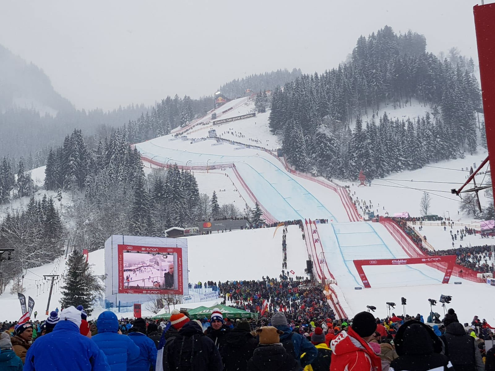
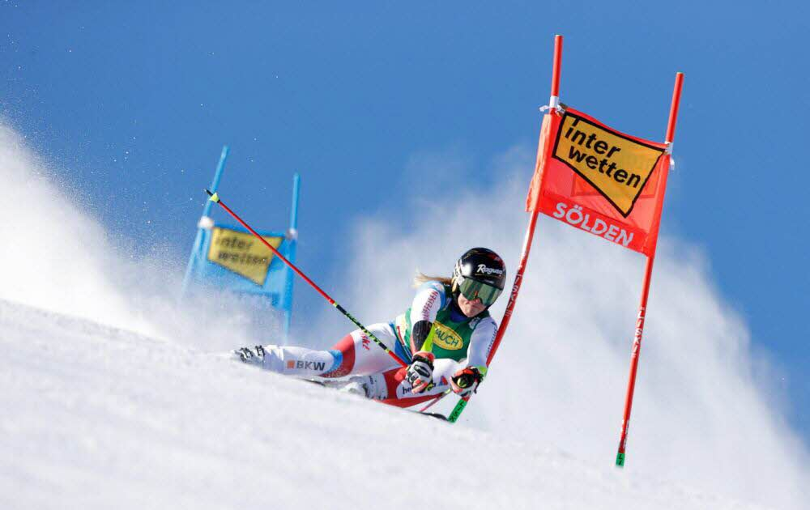
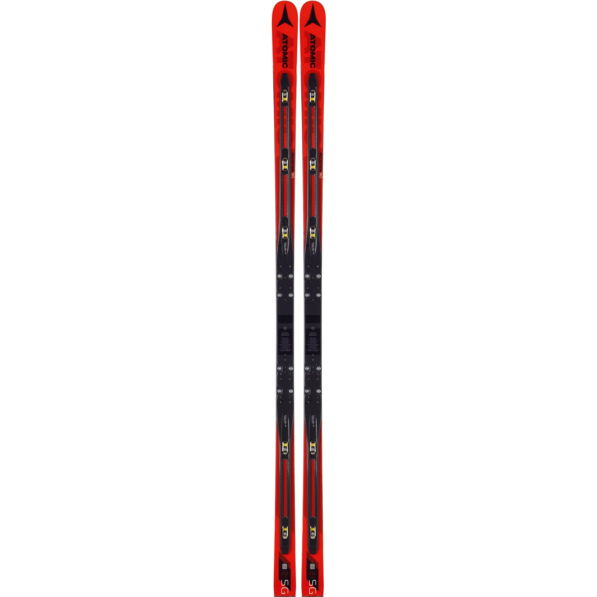
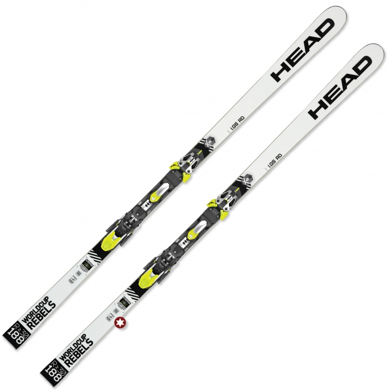
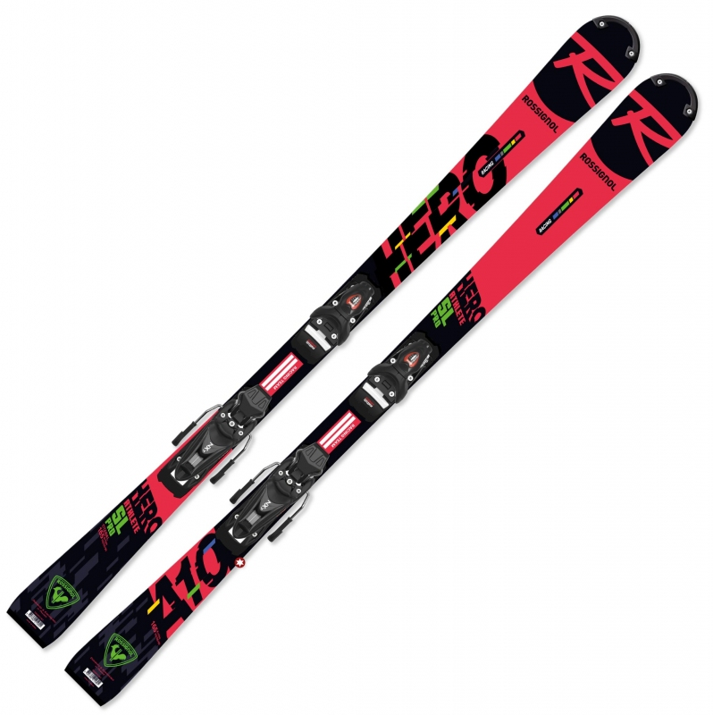
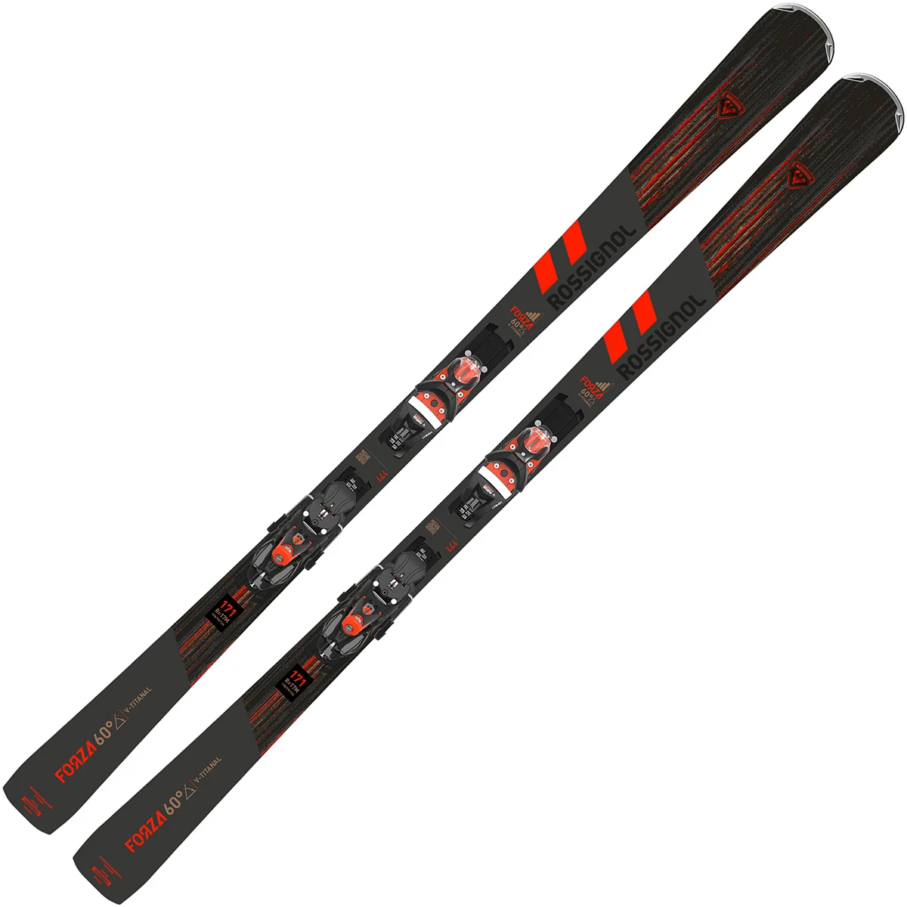
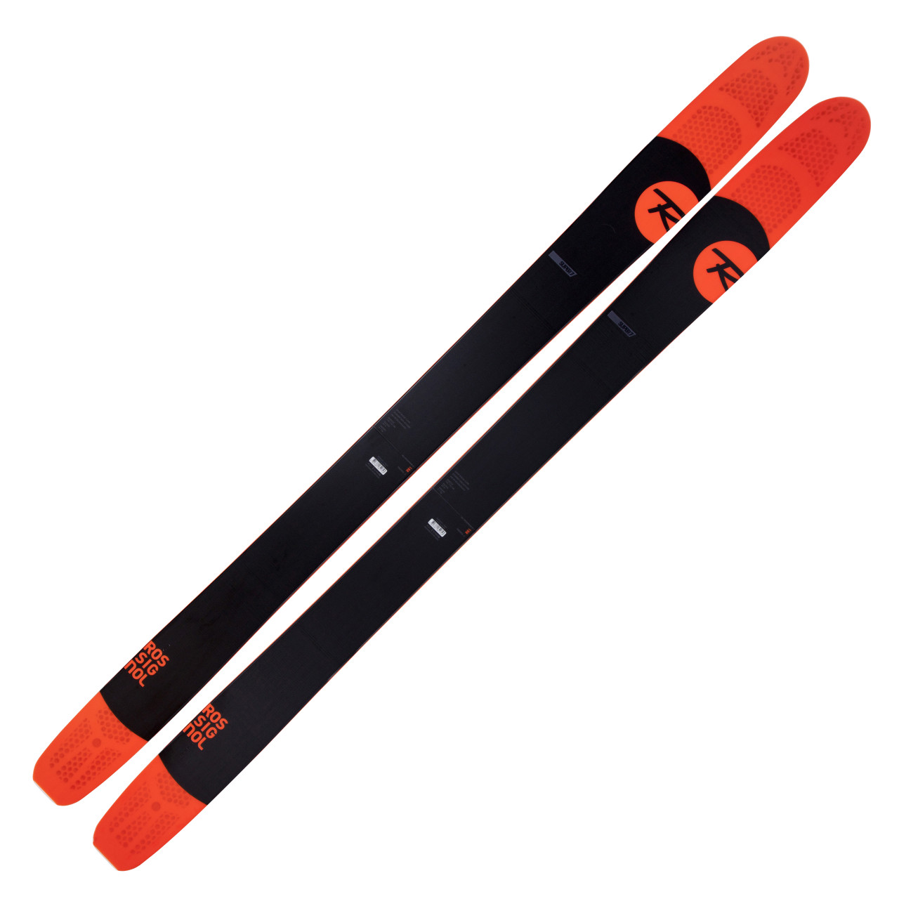
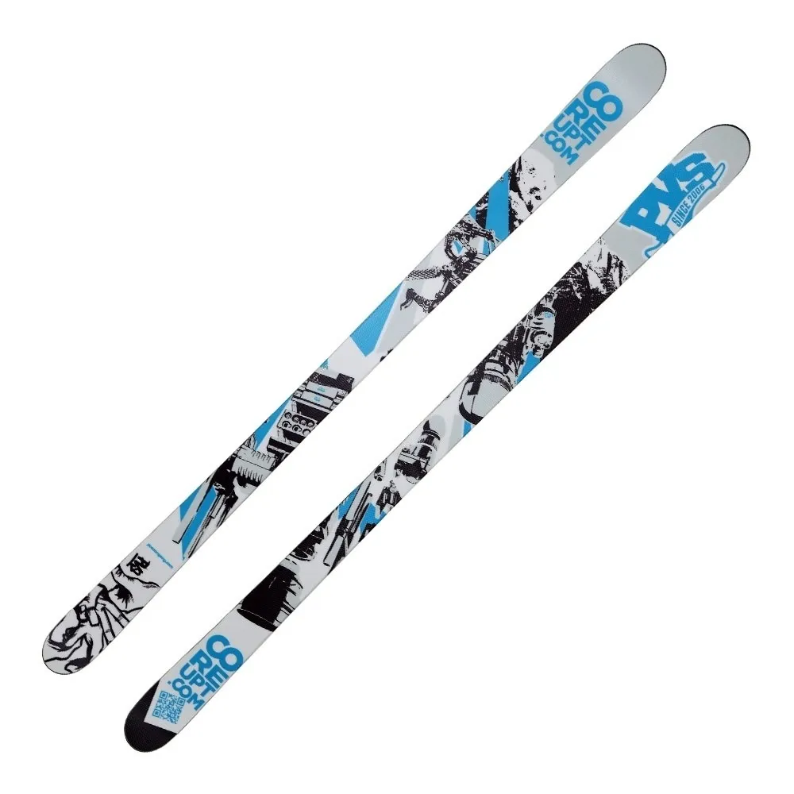

Ski racing
There are several disciplines in ski racing: downhill skiing, super g, giant slalom, and slalom. It is mostly skiers with a high level that practice this kind of skiing.

Downhill skiing

Super G

Giant slalom

Slalom
- Downhill skiing is a discipline where the piste has few curves really subtle. Furthermore, the gate poles are spaced a lot, which allows you to reach the fastest speed in all racing disciplines, meaning skiers have to use long skis.

- The Super G also is a speed discipline. It is the in-between between downhill skiing and the giant slalom. The gate poles are closer than in downhill skiing, but more spaced than in giant slalom. The curves are a bit more important than in downhill skiing, but the ski route is still pretty straight. Skiers use the same skis than for downhill skiing (pic. 1).
- The giant slalom is more technical than the other two disciples explained before. Indeed, the gate poles are closer to each other and the curves are important, making it it more difficult to turn. Because of this, skiers are using smaller skis than the previous ones, which is also helping reducing speed (pic. 2)

- The slalom is the most technical discipline in ski racing. It totally differs from the 3 other disciplines. First of all, the gate poles are different as they are just sticks. Secondly, the gate poles are really close to each other; skiers have to make short turns, which requires small skis. They also need protective equipment like a chin strap, a shin guard, and hand guards.

Alpine skiing
Alpine skiing is basically the type of skiing that you do when you are not specialized in a particular discipline. There is no need to have special skis, basic ones are ok. They are larger than race skis, but thinner than off-piste skis. It allows you to have a good stability and grip on snow. As they are made differrently, these skis do not require the skier to be an expert to use them. They are an in-between in terms of width between race skis and off-piste skis.

Off-piste skiing
Off-piste skiing consists of skiing when there is usually fresh snow, so when there are snowfalls. To ski in fresh snow, you have to use large skis to be able to "float" on the snow. Indeed, if you go in powder snow with race skis, you will skink in snow for sure if you're not used to it. Off-piste skis are the largest skis in all categories.

Freestyle skiing
Freestyle skiing is the discipline where skiers have to perform figures. They are trained for years to master this type of skiing. It requires a huge control of one's body, as well as a strong mental. To practice this king of skiing, skiers usually use double tip skis, which are also straight. Having double tip skis makes it easier to perform figures, or to ski backwards for example. These skis are thinner than the off-piste ones.
